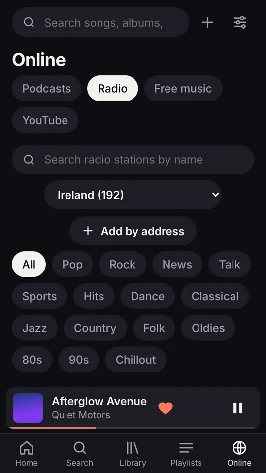
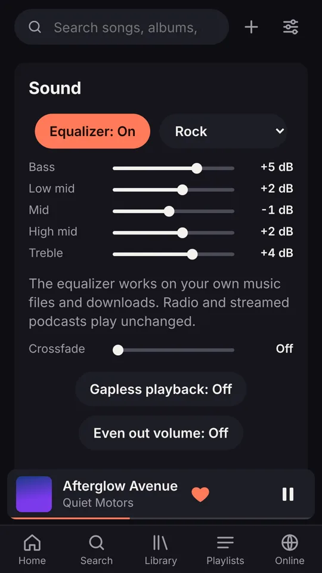

Your music, offline. Radio and podcasts built in.
Seylumi plays the songs you already own, anywhere, with no internet and no subscription. When you are online, thousands of free radio stations, podcasts and live recordings are a tap away.
- Android, iPhone and Windows
- Nothing to sign up for
- Your music stays on your device
Everything a music app should be
Built for the music you have collected over the years, without anyone else deciding what you can play.
Your library, offline
MP3, FLAC, M4A, OGG and more. Albums, artists, genres, decades and your own folders, built from the files you have.
Song radio
Start from any song and Seylumi keeps playing similar music from your own collection, for as long as you like.
Free podcasts and radio
Top 50 podcast charts in every category, live radio from every country, and free music from the Internet Archive.
Sound your way
Five-band equalizer with presets, crossfade, gapless playback, even volume across songs, and a sleep timer.
Share playlists
Send a playlist as a link. Your friend's Seylumi plays the songs they have and finds the rest on YouTube Music.
Nine languages
English, Irish, Spanish, French, German, Polish, Portuguese, Italian and Dutch, plus eight themes to make it yours.
See it in action
Lyrics that follow the song, covers found for you, car mode, listening stats and more.


Install in under a minute
Seylumi installs straight from your browser. It gets its own icon, opens in its own window and works without internet.
- Open Seylumi in Chrome.
- Tap the ⋮ menu at the top right, then Add to Home screen (or Install app).
- Tap Install. Seylumi appears with your other apps.
- Open it and tap + to add your music, or Link a folder to use your Music folder as it is.
- Open Seylumi in Safari.
- Tap the Share button, then Add to Home Screen.
- Tap Add.
- Open it and tap + to add music files from the Files app.
On iPhone, Seylumi can play music files stored in the Files app, but not songs inside the Apple Music app.
Reading this on a computer? Point your phone camera at the code to open Seylumi on your phone.
- Open Seylumi in Chrome or Edge.
- Click the install icon at the right of the address bar (a screen with a small arrow), then Install.
- Choose Link a folder and pick your Music folder. Your songs play from where they are, using no extra space.
Questions
The things people usually ask first.
Is it really free?
Yes. There is no subscription, no account and no adverts. If you enjoy it, you can support it with a small donation, but everything works without paying.
Does it need the internet?
No. Your own music plays completely offline. The internet is only used for the extras you choose: radio, podcasts, free music, covers and lyrics.
Where is my music stored?
On your own phone or computer. Nothing is uploaded anywhere, and there is no account that knows what you listen to. See the privacy policy.
Can it play my Spotify or Apple Music songs?
No. Those services lock their songs to their own apps. Seylumi plays music files you have, such as songs you have bought, ripped from CDs or downloaded legally. It can also play YouTube and YouTube Music links in YouTube's own player.
Which files does it play?
MP3, M4A/AAC, FLAC, WAV, OGG and Opus. It reads the song details and covers inside the files, and can find missing covers and lyrics online.
Is it in the Play Store?
Not yet. For now you install it straight from your browser, which takes under a minute and updates itself automatically.
Give your music a home
No account to create. Open Seylumi, add your songs and press play.
Open Seylumi